Contrôle Multimodal d'un Drone DJI Tello (Vocal, Gestuel et Manuel)
Développement d'une interface de pilotage intelligente et multimodale pour le drone DJI Tello. Elle intègre la commande vocale en temps réel et le guidage gestuel par vision par ordinateur au signal de la main. Une interface manuelle au clavier complète l'ensemble pour offrir un contrôle de secours d'une précision maximale.

Robot éviteur d'obstacle
Conception et réalisation d'un robot mobile autonome capable de naviguer dans un environnement inconnu tout en évitant les obstacles. Il embarque un capteur ultrason pour mesurer la distance en temps réel et un servomoteur permettant de balayer l'espace pour choisir la meilleure trajectoire. Le système analyse les données pour stopper les moteurs, réorienter le robot et poursuivre sa navigation en toute sécurité.

Robot auto-balanceur autonome
Ce projet consiste à modéliser un robot auto-balanceur comme un pendule inversé sur chariot, puis à comparer plusieurs stratégies de contrôle PID, LQR, logique floue et apprentissage par renforcement afin d'identifier l'approche la plus rapide, précise, robuste et économe en énergie. La commande retenue a ensuite été déployée et testée en conditions réelles sur un microcontrôleur STM32, validant la faisabilité d'un système embarqué d'équilibrage autonome.
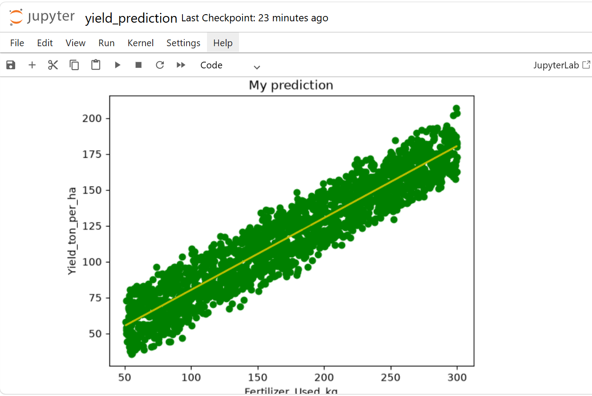
Yield prediction
Ce projet utilise la régression linéaire pour modéliser la relation entre la quantité d'engrais épandue et le rendement du maïs, à partir d'un jeu de données agricole, en s'appuyant sur une analyse de corrélation pour justifier le choix de la variable prédictive.
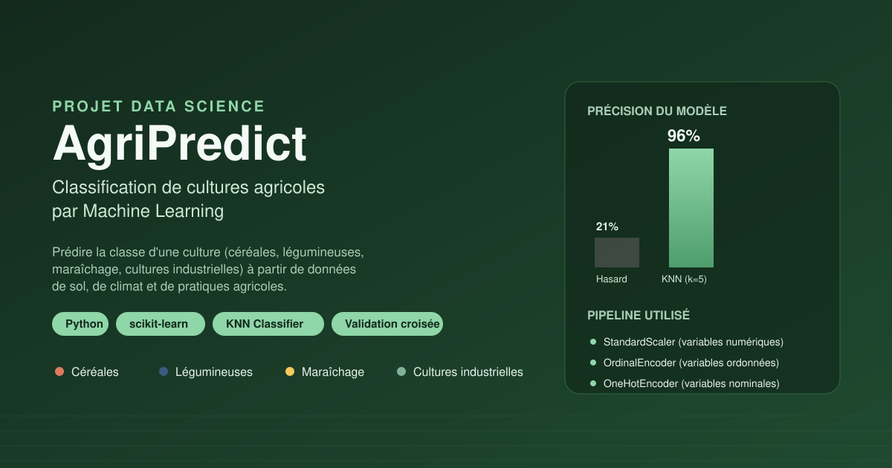
AgriPredict
Modèle KNN (scikit-learn) prédisant la classe d'une culture agricole à partir de données de sol et de climat, avec prétraitement adapté par type de variable. Précision de 96% en validation croisée, contre 21% pour une prédiction aléatoire.
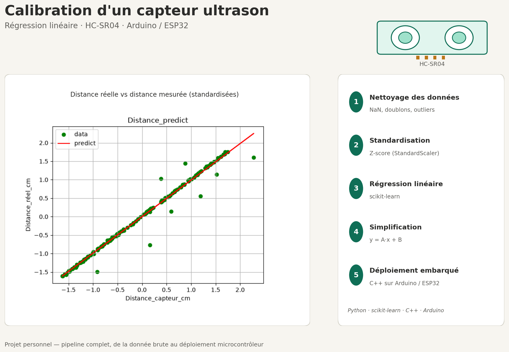
Calibration d'un capteur ultrason par régression linéaire
Calibration d'un capteur ultrason HC-SR04 par régression linéaire : nettoyage et standardisation des données (StandardScaler), entraînement d'un modèle scikit-learn, puis simplification mathématique en une équation linéaire pour un déploiement optimisé en C++ sur Arduino Uno et ESP32.
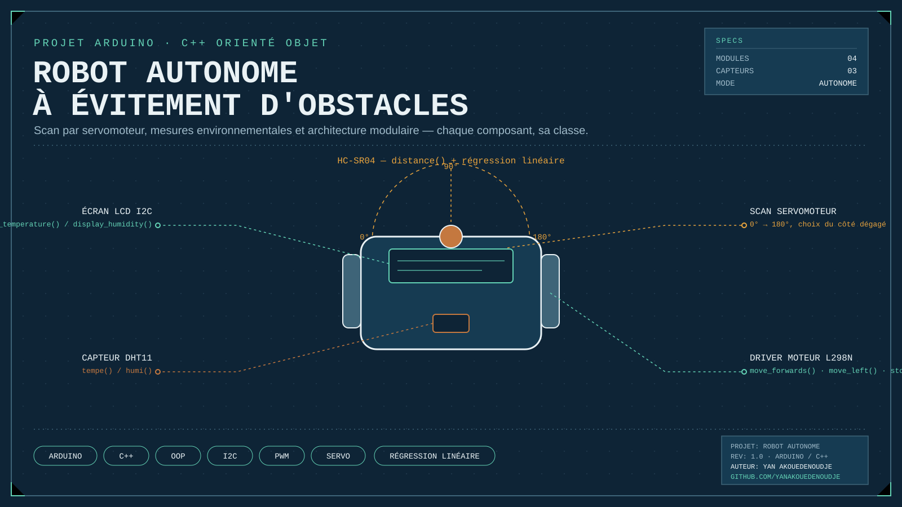
Robot Mobile Éviteur d'Obstacles & Station Météo Embarquée
Conception d'un robot autonome en C++ POO combinant navigation intelligente et mesure microclimatique. Le système balaye son environnement pour éviter les collisions tout en affichant la température et l'humidité en temps réel.
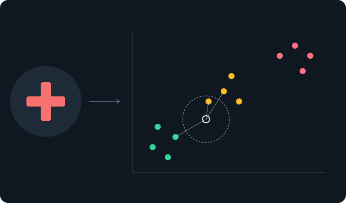
Prédiction du Risque de Diabète par Machine Learning
Conception d'un pipeline de classification en Python (scikit-learn) prédisant le niveau de risque de diabète d'un patient à partir de données démographiques, physiologiques et de mode de vie. Le système combine un prétraitement structuré des variables numériques et catégorielles avec un modèle KNN optimisé par recherche d'hyperparamètres.
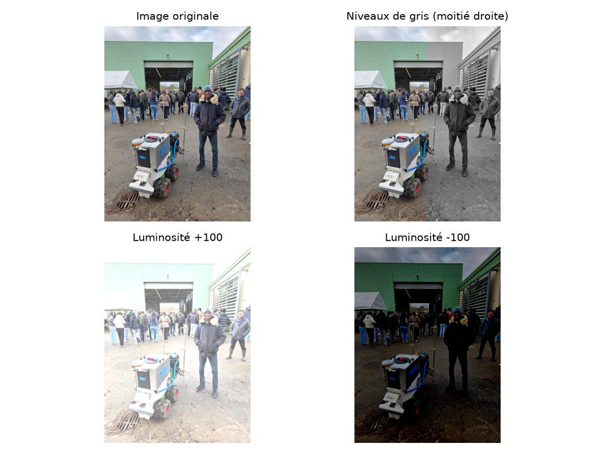
Traitement d'images avec NumPy
Exercices de traitement d'images avec NumPy : manipulation des images comme tableaux de pixels (lecture des valeurs RGB, modification de zones), conversion en niveaux de gris par pondération des canaux, et réglage de la luminosité avec gestion du dépassement de plage.
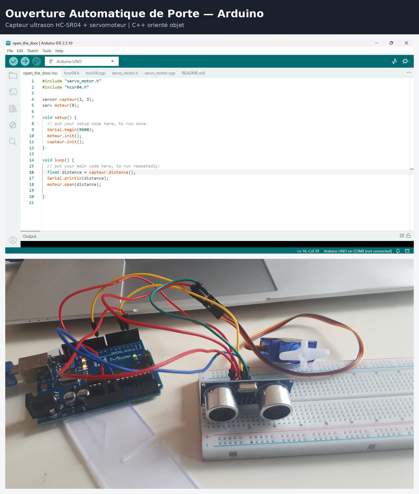
Ouverture Automatique de Porte par Capteur Ultrason
Conception d’un système embarqué en C++/Arduino permettant l’ouverture automatique d’une porte par détection de proximité. Intégration d’un capteur ultrason HC-SR04 et d’un servomoteur, avec une architecture modulaire basée sur la programmation orientée objet.
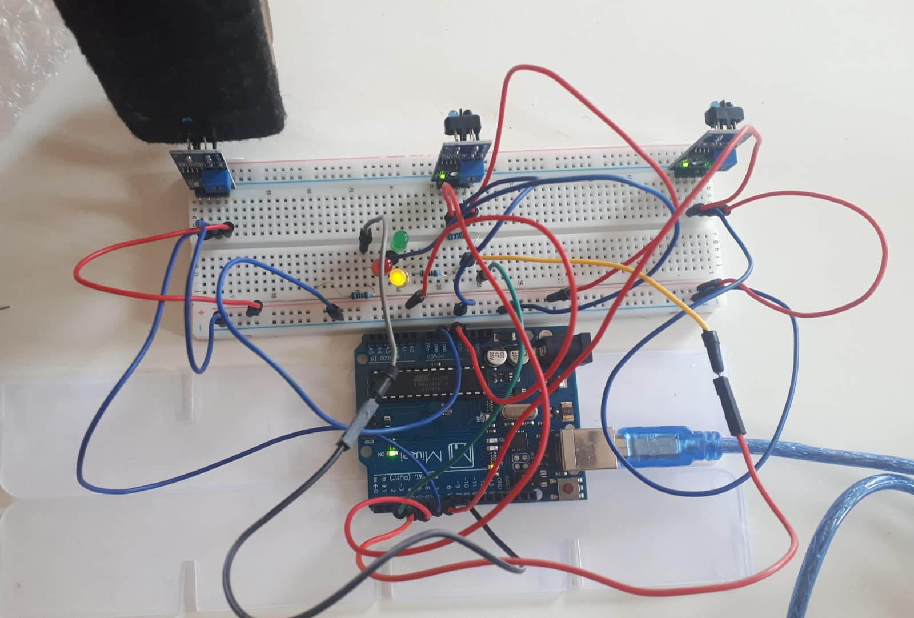
Suiveur de Ligne par Capteurs Infrarouges
Conception d'un système embarqué en C++/Arduino permettant la détection et le suivi d'une ligne au sol grâce à trois capteurs infrarouges. Traitement en temps réel des signaux de position (centre, gauche, droite) et retour visuel via un système de LEDs indicatrices (vert/jaune/rouge) reflétant l'alignement du robot par rapport à la ligne.
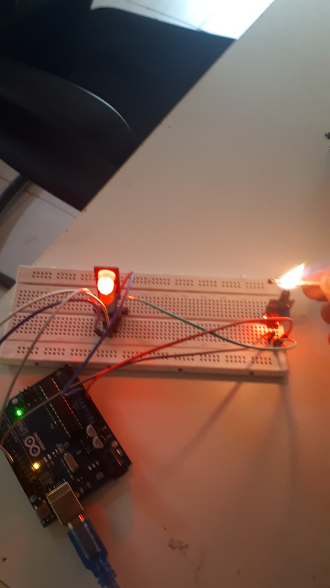
Détecteur de Flamme par Capteur Infrarouge
Conception d'un système embarqué en C++/Arduino permettant la détection en temps réel d'une flamme grâce à un capteur infrarouge dédié. Déclenchement d'une alerte visuelle par LED clignotante en cas de détection, assurant une surveillance continue de l'environnement.
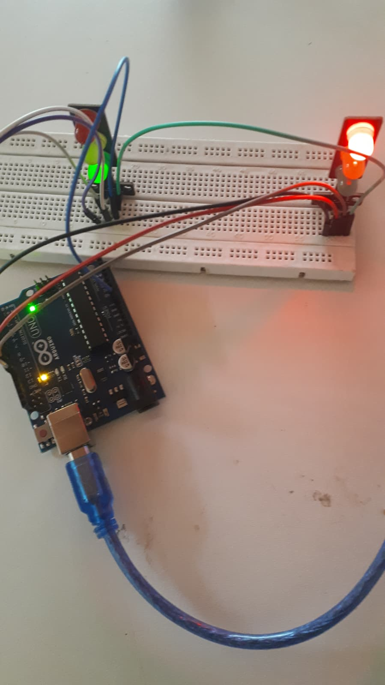
Simulation de Feux de Circulation
Conception d'un système embarqué en C++/Arduino simulant la gestion d'un carrefour à deux feux de circulation. Implémentation d'un cycle temporel synchronisé entre les deux feux, avec transitions vert/jaune/rouge reproduisant fidèlement la logique de régulation du trafic routier.
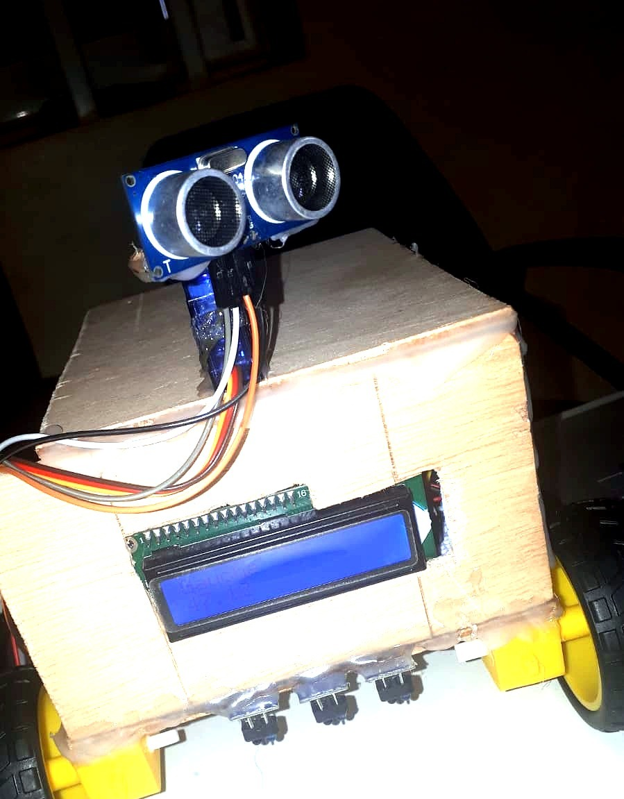
Robot mobile autonome à évitement d'obstacles
Conception d’un robot mobile autonome sur Arduino, capable de détecter les obstacles et de choisir une trajectoire adaptée grâce à un capteur ultrason HC-SR04 et un servomoteur. Développement en C++ orienté objet, pilotage des moteurs via un double pont en H et affichage des mesures sur écran LCD I2C.
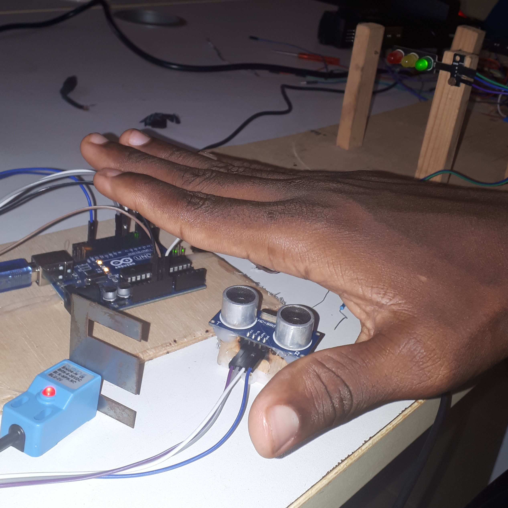
Détecteur de présence et de métal
Conception d'un système de détection à deux niveaux sur Arduino : un capteur ultrason HC-SR04 repère la présence d'un objet à moins de 5 cm, puis un capteur inductif SN04-N détermine s'il est métallique. Développement en C++ avec lecture du capteur inductif en INPUT_PULLUP, calcul de distance par mesure du temps d'écho, signalisation par LED (métal détecté / objet non métallique) et suivi des mesures sur le moniteur série.
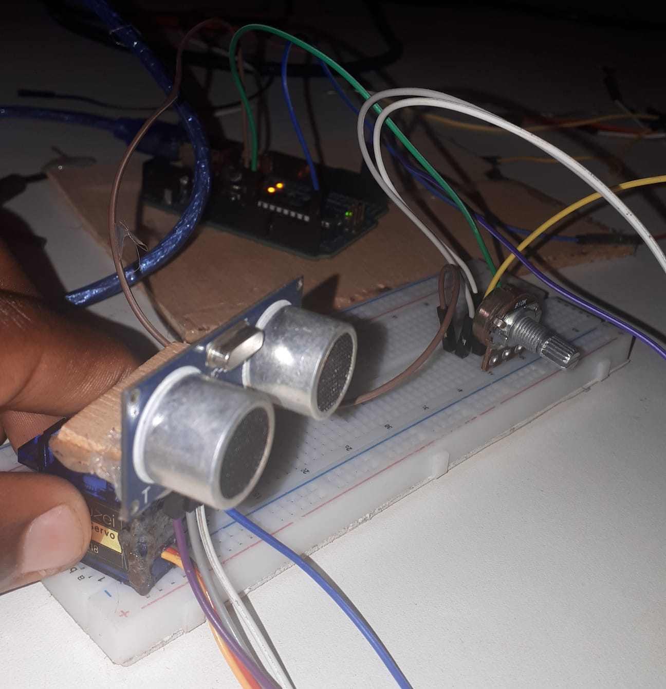
Contrôle de servomoteur par potentiomètre
Conception d’un système de commande de position sur Arduino : un potentiomètre branché sur une entrée analogique permet de piloter un servomoteur sur toute sa plage de 0 à 180°. Développement en C++ avec la bibliothèque Servo, conversion de la lecture analogique (0-1023) en angle grâce à map(), filtrage des micro-variations pour éviter les tremblements du servo, et suivi de l’angle en temps réel sur le moniteur série.

Carte de contrôle moteur (PCB)
Conception d'un circuit imprimé double face pour piloter deux moteurs DC à partir d'un microcontrôleur. Réalisation du schéma électrique, placement-routage des composants, vérification des règles de conception (DRC) et export des fichiers Gerber pour la fabrication.
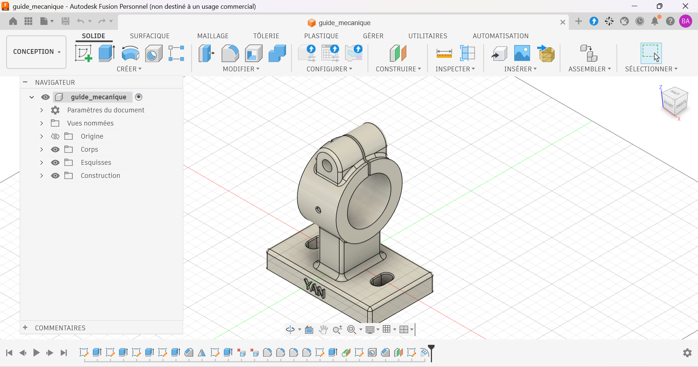
Guide mécanique à collier fendu (CAO 3D)
Modélisation 3D d'un guide mécanique à partir d'un plan de référence : embase avec trous oblongs de fixation, montant, collier fendu avec oreille de serrage pour maintenir un tube ou un arbre, congés, chanfreins et gravure personnalisée.
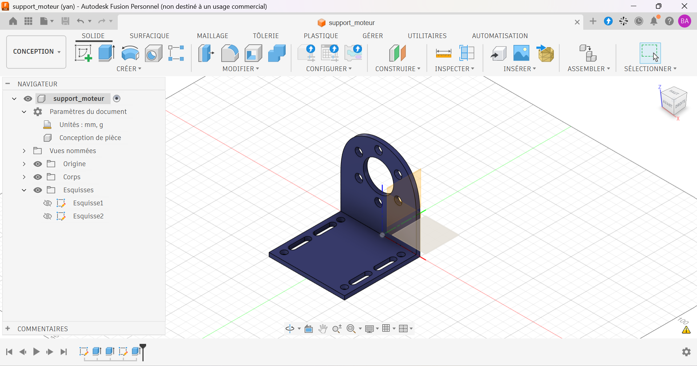
Support moteur en équerre (CAO 3D)
Modélisation 3D d'un support moteur en équerre : platine de base avec trous oblongs pour régler la position, et plaque verticale arrondie avec passage central et perçages de fixation du moteur. Réalisation de la mise en plan cotée.
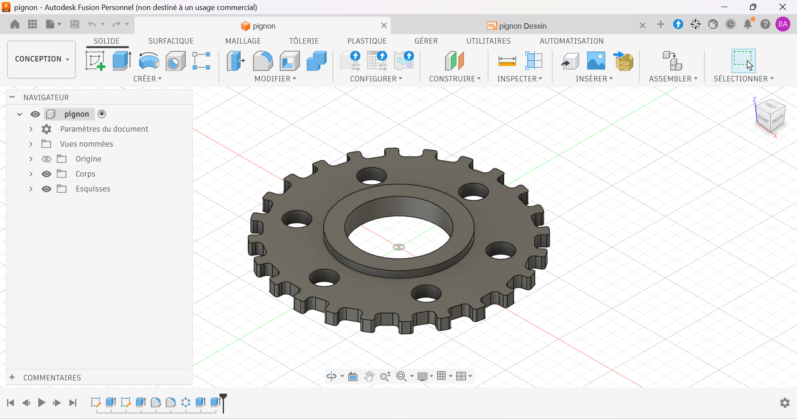
Roue à denture rectangulaire (CAO 3D)
Modélisation 3D d’une roue à denture rectangulaire à angles arrondis, avec moyeu surélevé, alésage central et 6 perçages répartis régulièrement. Réalisation de la mise en plan cotée et export des fichiers STEP et STL.
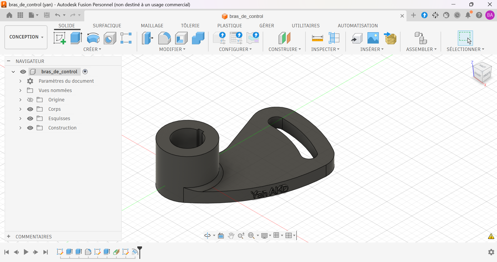
Bras de commande à lumière courbe (CAO 3D)
Modélisation 3D d'un bras de commande à partir d'un plan de référence : moyeu cylindrique avec alésage et rainure de clavette pour le montage sur un arbre, plaque à profil courbe et lumière en arc de cercle pour régler la position d'un axe de liaison, congés de raccordement. Réalisation de la mise en plan avec vue en coupe et vue de détail.
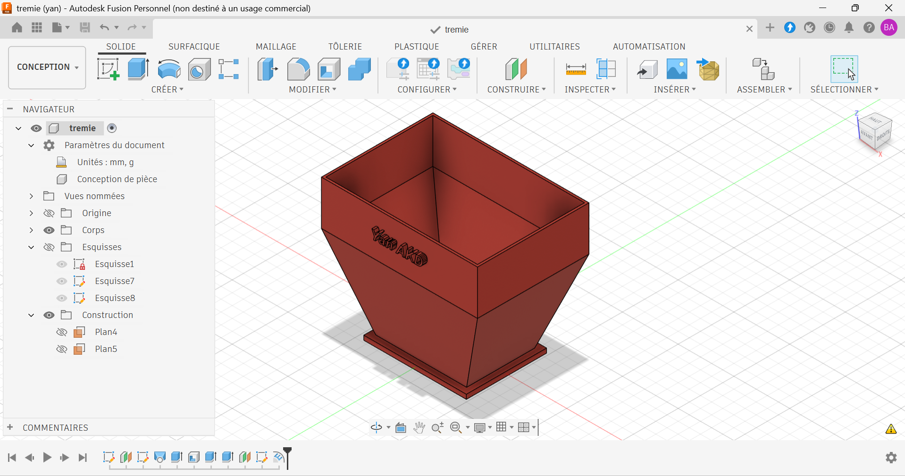
Trémie de semoir (CAO 3D)
Modélisation 3D d'une trémie de semoir : réservoir rectangulaire se rétrécissant en entonnoir vers une sortie munie d'une collerette de fixation, pour guider les graines vers le système de dosage. Réalisation de la mise en plan cotée.
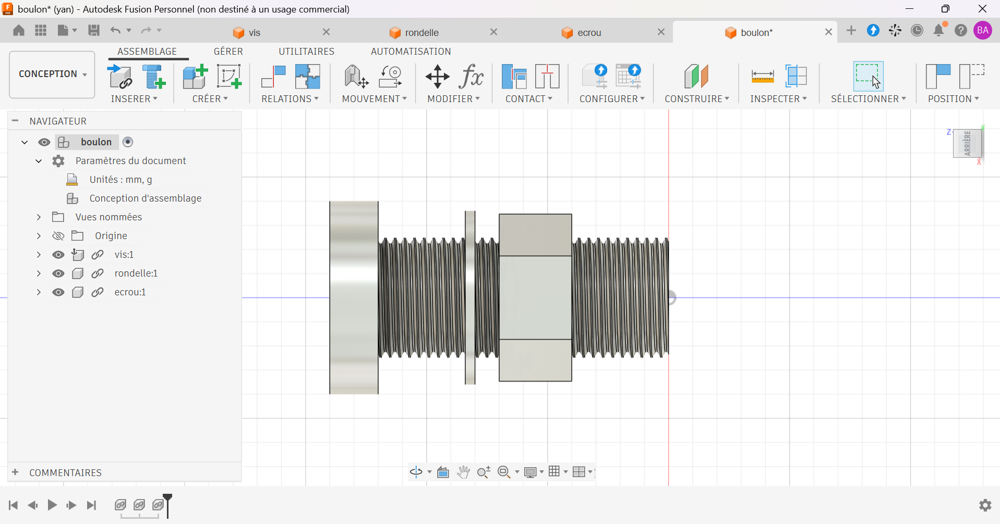
Assemblage vis, rondelle et écrou (CAO 3D)
Modélisation 3D d'un assemblage boulonné : vis à tête cylindrique avec filetage hélicoïdal, rondelle et écrou hexagonal. Mise en position des pièces dans un assemblage.
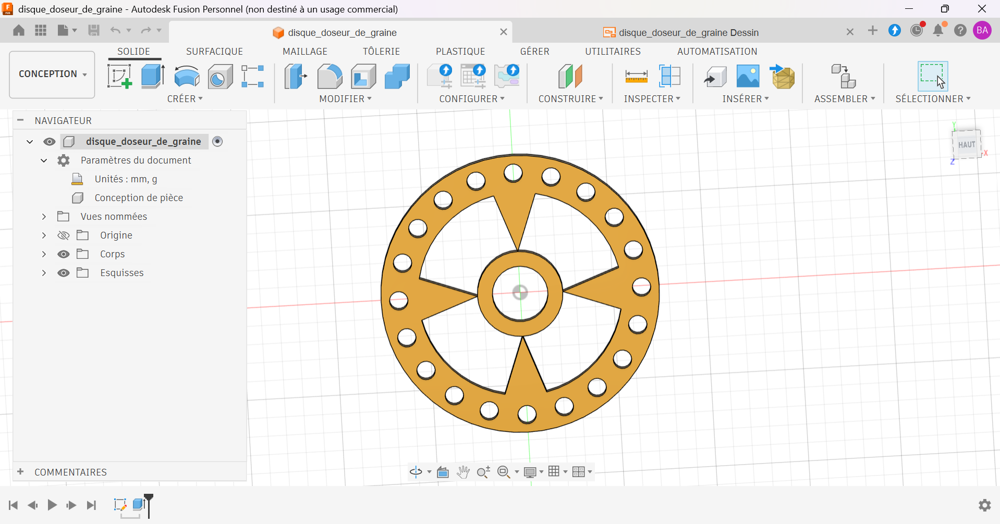
Disque doseur de graines (CAO 3D)
Modélisation 3D d'un disque doseur de graines pour semoir : moyeu central, évidements et couronne de perçages dimensionnés pour prélever les graines une à une lors de la rotation du disque.
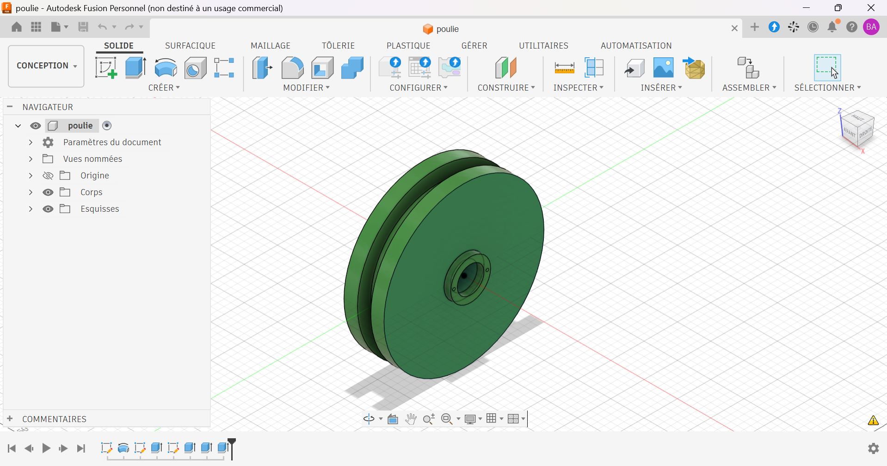
Poulie de transmission à gorge (CAO 3D)
Modélisation 3D d'une poulie de transmission à gorge : deux flasques, gorge de guidage, moyeu central avec alésage et petits perçages de fixation, pour transmettre un mouvement de rotation par courroie ou par câble.
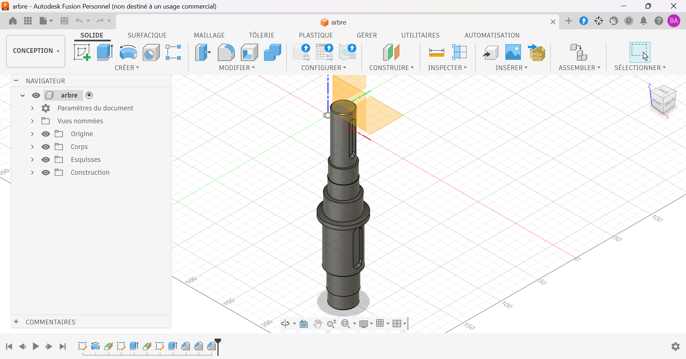
Arbre étagé à rainures de clavette (CAO 3D)
Modélisation 3D d'un arbre de transmission étagé : plusieurs diamètres, épaulement, chanfrein et deux rainures de clavette pour l'entraînement de pièces en rotation.
Aucun projet dans cette catégorie pour le moment.